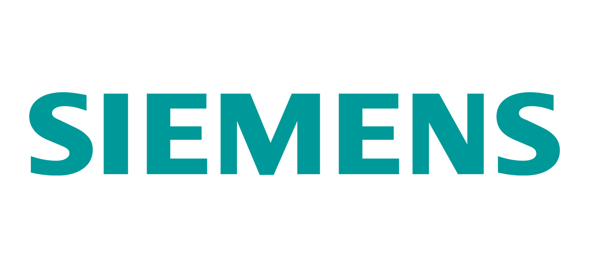
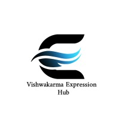
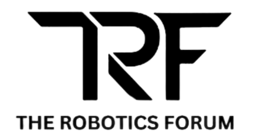
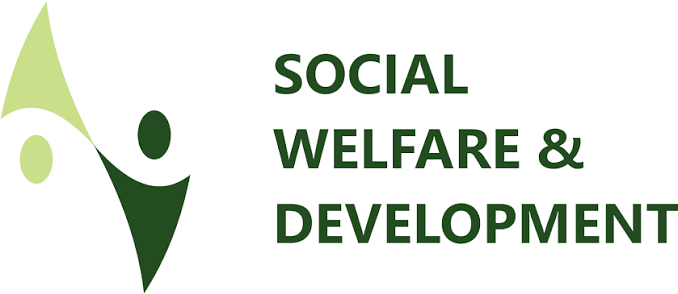
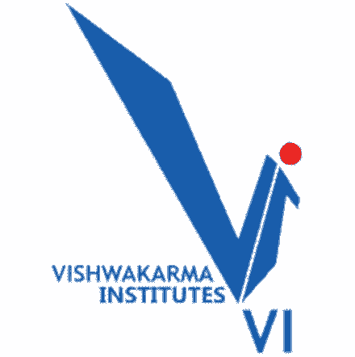

Graduate Researcher
Dec 2025 - Present
Working on the Graphitti parallel neural simulator, combining burst and weight dynamics with graph-based analysis to study how network structure and synaptic weight changes interact.
WebsiteHi, my name is
I started by building robotic hands and publishing IEEE research. Then spent 2+ years at Siemens learning how production cloud systems actually break - and how to stop them from breaking. Now at UW, I'm channeling both into AI agents that detect, respond to, and fix security threats on their own.
Seeking Internship Opportunities | Available for Full-Time Roles Starting June 2027
Experience
Working on the Graphitti parallel neural simulator, combining burst and weight dynamics with graph-based analysis to study how network structure and synaptic weight changes interact.
Website
Projects
Multi-agent AI system for vulnerability detection, misconfiguration scanning, compliance enforcement, risk prioritization, fix suggestions, and human-in-the-loop controls across CI/CD pipelines.
Role: Designed the multi-agent architecture, orchestration flow, reasoning layer, and CI/CD security automation.
Impact: Reduced false positives from about 35% to under 10% and cut pipeline runtime by about 60% with parallel scanning agents.
Built a research-backed chaos engineering framework for validating cloud-native resilience through controlled failure experiments.
Role: Connected outage evidence with chaos testing methods, designing experiments for service crashes, latency spikes, network partitions, and cascade prevention.
Impact: Made reliability measurable by validating circuit breakers, retries, health checks, and observability under real failure conditions.
Built and deployed services with EKS/ECS, Terraform, IAM, KMS, Docker, ECR, Prometheus, Grafana, Datadog, and CloudWatch.
Role: Built infrastructure, deployment, observability, and security foundations for containerized services.
Impact: Created a reproducible cloud platform for scalable deployments and operational monitoring.
Built as a distributed system across six student teams. My team owned the UW Content Platform, including scraping and indexing services that extract public UWB campus content and serve query-ready data to Feed, Search, and Notifications. Also built Security Monkey, a FastAPI service for auth-boundary validation.
Role: Owned Team F's scraping, indexing, structured content, and service security validation work.
Impact: Delivered query-ready campus content and dashboard-friendly security checks for downstream teams.
Built a supervised machine learning framework using 1,200 cloud vulnerability records to detect misconfigurations across AWS, Azure, and GCP.
Role: Engineered security features, trained Logistic Regression, Random Forest, and XGBoost models, and added SHAP-based interpretability.
Impact: Achieved 0.9344 ROC-AUC with XGBoost and identified Random Forest as production-suitable with a 4.9% false negative rate.
Conferences and Paper Publications
Hackathons and Competitions
Proposed a video-conferencing plugin that combines real-time transcription, typed or selected responses, and text-to-speech so Deaf and non-speaking users can independently participate in meetings without relying on separate tools.
Role: Shaped the product concept, accessibility workflow, and meeting-assistance experience.
Impact: Created a communication design that supports independent meeting participation for Deaf and non-speaking users.
Built a human-first emergency awareness system for deaf and hard-of-hearing users, turning danger signals into clear visual, vibration-based, and mobile-friendly alerts. The system helps users detect emergencies, receive instant alerts, and respond quickly through one unified experience.
Role: Built the emergency-awareness concept and user-facing alert workflow with accessibility needs at the center.
Impact: Earned winner recognition in the Avanade Business Solutions category at UWB Hacks 2026.
Built a Kubernetes-native approach for automated TCX component deployments across cloud platforms using Crossplane and IaC practices.
Role: Developed a Kubernetes-native deployment approach using Crossplane and Infrastructure-as-Code patterns.
Impact: Simplified repeatable multi-cloud component deployment for TCX environments.
Created RescueNet, a platform designed to improve emergency response coordination and efficiency.
Role: Designed the response coordination workflow and cloud-based platform direction.
Impact: Reached finalist standing with a solution focused on faster, clearer emergency coordination.
Developed a hardware automation prototype to manage traffic signal peak hours and optimize urban traffic flow.
Role: Built and tested a hardware automation prototype for adaptive traffic-signal control.
Impact: Addressed peak-hour congestion with an automation-first urban mobility solution.
Leadership

Led community expansion and engagement for a diverse creator network through meetups across aesthetics, content, photography, group discussion, videography, and video editing.

Wrote and edited technical content for social media and online platforms, assisted with multimedia tasks, and collaborated with team members to plan and execute club events and activities.
View club page
Supported Matadhikar voter registration by helping peers complete voting forms and navigate voter ID enrollment. Donated 50+ books through a Social Welfare and Development Committee book donation campaign for underprivileged children.
Skills
Education
Coursework includes Machine Learning, Information Assurance and Cybersecurity, Software Design Evaluation, Research Methods, Software Architecture, and Distributed Computing.

Certifications